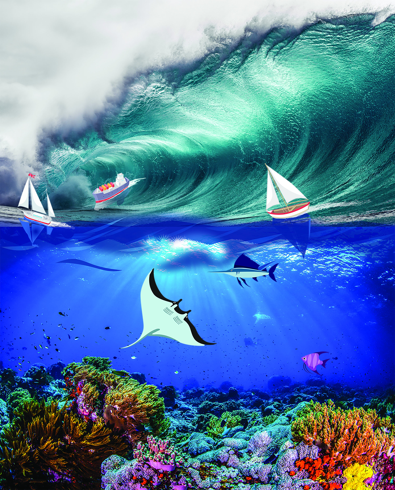

Digital Collage
Augmented Reality
My image has two components, the top is a tidal wave with boats sailing and the bottom is an underwater view of the sea life. The tidal wave is disturbing the boats and causing them to sail quickly out of control. However, if you look at the underwater perspective, the fish are swimming happily they are not affected by the tidal wave above them. The personal motivation behind this project was an interpretation of life. I was showing how big events can cause your life to get stressful and out of control like the tidal wave on the boat, but underneath it all, you continue to survive. The underwater scene and fish are a representation that everything will eventually return back to normal. I wanted my audience to reflect on their own past hardships and realize how they are still living life today happily, like the fish.
